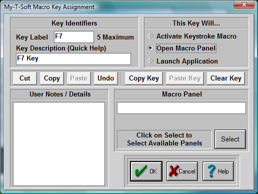

| My-T-Soft®: for Windows; Indestructible Keyboards and Indispensable Utilities; Version 1.80; User's Guide | ||
|---|---|---|
| Prev | Next | |

Key Identifiers
Enter a key label. This label will appear on the key in the Macro Panel. Enter a key description. The key description will appear in the Quick Help bar.
This key will...
Activate Keystroke Macro
Click on this Radio-Button if you want to create a Macro consisting of keystrokes. Use the edit box below (Keystroke Macro) to enter your Macro, or press Zoom to use the Macro Editor. You may use any Windows supported ANSI characters.
Note: As keys are entered, characters are treated as both the press and release events. Case is preserved, and Caps Lock is assumed OFF when playing back the macro. Therefore, using lowercase characters is preferred. If a Keystroke macro is initiated with the Caps Lock on, then the Macro WILL be affected and the end-result may not be as originally intended!
Open Macro Panel
Click on this Radio-Button if you want to open another panel. Enter the Macro name in the edit box below (Macro Panel), or press Select to select an existing Macro Panel.
Launch Application
Click on this Radio-Button if you want to assign an application to your Macro button. Enter the application name and path in the edit box below (Application), or press Browse to select an application. You may also enter a Working Directory, which will be the current directory used by the Application once it is launched. Short file names are used for maximum compatibility.
User Notes / Details
You may enter helpful information, notes, or details regarding the settings for this key. This is used only for reference and will appear on the Panel Documentation.
Cut, Copy, Paste, Undo
These shortcut keys may be used to manipulate the text. This may help you enter information & interact with other Windows applications.
Copy Key, Paste Key, Clear Key
These shortcut keys may be used to manipulate & operate within My-T-Soft Setup / Macro Key Editing. For example, you could Copy Key information from an existing panel to be pasted into another Macro Panel.
Click on the OK Button to save the current options.
Click on the CANCEL button to Close the Dialog & cancel any changes.